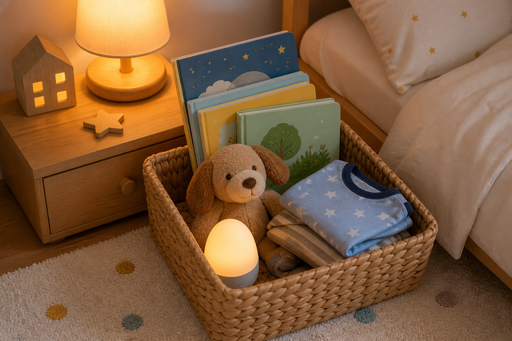
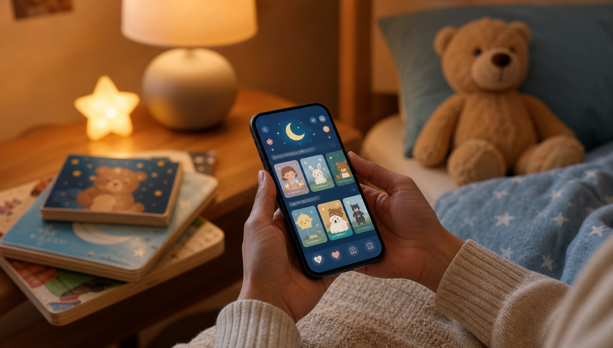

Many of the stories we grew up with are called “children’s stories,” but when we look at them closely, they often include frightening moments, harsh punishments, danger, loss, or characters learning lessons through fear.
For generations, these stories have been passed down from parent to child. Many of them are part of our culture, our childhood memories, and our family traditions. Some classic stories also carry meaningful lessons about bravery, honesty, kindness, and making good choices.
But there is an important question modern parents can ask: are all of these stories suitable for very young children, especially babies, toddlers, and preschoolers aged 0 to 5?
At Baboo Stories, we believe the answer is not as simple as “classic stories are bad” or “children should never hear about fear.” Stories can include challenges. Children can learn from characters who make mistakes. A little problem in a story can help a child understand emotions, friendship, patience, or courage.
But for very young children, especially at bedtime, the emotional tone of a story matters.
A story for a 2-year-old does not need to use fear to be meaningful. A bedtime story for a 4-year-old does not need harsh punishment to teach kindness. A story for a baby does not need dramatic danger to support imagination.
Young children can learn through gentleness too. They can learn through kindness, rhythm, repetition, curiosity, family connection, animals, nature, small discoveries, and warm moments shared with a parent. That is the heart of Baboo Stories.
Why this question matters for children aged 0 to 5
Children aged 0 to 5 are in a very special stage of development. Their language is growing. Their imagination is forming. Their emotional world is still new. They are learning what is safe, what is kind, what is scary, what is funny, and what it means to be loved.
At this age, stories are not just entertainment.
Stories can become part of a child’s daily rhythm. They can become part of bedtime, quiet time, family bonding, and emotional comfort. A child may not understand every word in a story, but they feel the voice, the tone, the closeness, and the mood.
That is why a story read by a parent can be so powerful.
For a baby, the parent’s voice may matter more than the plot. For a toddler, the rhythm and repetition may matter more than the lesson. For a preschooler, the feeling of safety and connection may matter more than a dramatic ending.
This is one reason gentle storytelling deserves more attention.
Are scary or violent stories always bad for children?
Not always.
It is important to be fair. Many traditional stories include conflict because conflict is part of storytelling. A character wants something. Something goes wrong. The character learns, changes, or solves a problem.
For older children, stories with danger or fear can sometimes help them think about courage, problem-solving, fairness, and consequences. When a trusted adult reads with them, talks with them, and helps them understand the story, children may be able to process more complex themes.
But children aged 0 to 5 are not the same as older children.
A 1-year-old, a 3-year-old, and a 6-year-old do not experience stories in the same way. Very young children may not fully separate imagination from reality. They may remember the scary feeling more than the moral lesson. They may not understand that a frightening event in a story is symbolic, exaggerated, or from a different time.
That does not mean parents need to panic about every classic tale. It simply means parents can be thoughtful.
For bedtime especially, the goal is usually not excitement, tension, or fear. The goal is comfort, closeness, and calm.
The bedtime story should feel safe
Bedtime is one of the most emotionally sensitive times of the day.
A child is tired. The room is quiet. The day is ending. They may want closeness, reassurance, and routine. A story at this moment can help a child slow down and feel connected to the parent.
This is why the emotional tone of bedtime stories matters.
A bedtime story does not have to be boring. It can still be imaginative, beautiful, funny, and meaningful. But it should ideally leave the child feeling safe.
A gentle bedtime story can include:
- warm family moments,
- friendly animals,
- nature and seasons,
- small adventures,
- simple problems solved kindly,
- sharing and helping,
- curiosity and discovery,
- soft humor,
- repetition and rhythm, and
- a calm ending.
For very young children, these simple elements can be enough. A story does not need frightening characters, harsh consequences, or intense conflict to be memorable.
What children can learn from gentle stories
Sometimes people assume that gentle stories are “too soft” or that children need fear to learn important lessons.
But young children can learn many valuable things from kind, calm stories.
- They can learn empathy when a character helps a friend.
- They can learn patience when a character waits for a flower to bloom.
- They can learn confidence when a small animal tries something new.
- They can learn responsibility when a child cares for a toy, a pet, or a plant.
- They can learn emotional language when a story names feelings like happy, worried, shy, excited, or proud.
- They can learn family love when a parent and child share a moment together.
- They can learn imagination when the story gives them space to picture the world in their own mind.
Gentle does not mean empty. Gentle does not mean meaningless. Gentle stories can still carry values, emotions, and lessons. They simply do it without relying on fear.
Why parent-led storytelling is different from screen entertainment
Baboo Stories is designed around a simple idea: the parent is the storyteller.
The app is not meant to replace the parent’s voice. It is not meant to keep the child busy alone with a screen. It is meant to support a shared moment between parent and child.
This is an important difference.
Many children’s apps today are built around bright graphics, fast movement, sounds, animations, rewards, and constant stimulation. Those things may capture attention, but they do not always create calm.
Baboo Stories takes another path.
The stories are there for the parent to read aloud. The child listens, imagines, asks questions, smiles, responds, and connects. The story becomes a bridge between parent and child.
A few quiet minutes of storytelling can become a meaningful daily ritual. It can say: I am here with you. I have time for you. Let us imagine something together. Let us end the day gently.
That emotional connection is one of the biggest strengths of parent-led storytelling.
Why fewer graphics can support imagination

Many modern children’s products show everything visually. The character, the room, the action, the background, the emotion, and even the next step are all presented on the screen.
There is nothing wrong with beautiful illustrations. Pictures can help young children understand a story. But when everything is shown, there is less for the child to imagine.
A story that is read aloud gives children space.
They can imagine the color of the little bird. They can picture the moon in their own way. They can decide what the garden looks like. They can create the sound of the rain in their mind. They can turn a simple sentence into their own little world.
This kind of imagination is valuable.
Baboo Stories uses the app as a guide, but the real magic happens in the child’s mind and in the parent’s voice.
The goal is not to overwhelm the child with visuals. The goal is to open a door.
Why gentle stories can still include lessons
Some parents may wonder: if a story has no fear, no villain, and no punishment, how will it teach anything?
The answer is simple. Children can learn through positive examples.
- A story can show kindness instead of punishing unkindness.
- A story can show sharing instead of creating fear around selfishness.
- A story can show courage through trying again, not through danger.
- A story can show honesty through trust, not shame.
- A story can show responsibility through care, not harsh consequences.
For very young children, this positive approach can be especially helpful. They are still learning how emotions work. They are still learning how to behave with others. They are still learning how to understand themselves.
A gentle story can model the behavior we want children to see.
The Baboo Stories approach
Baboo Stories was created from a very personal place.
These stories began as stories written and read to my own child. Over time, they were shared with children in my family and among friends. The response was warm and encouraging. Children listened. Parents connected with the tone. The stories became part of quiet, happy moments.
As the collection grew, the stories were curated, revised, and improved with input from educators.
The goal became clearer: to create gentle, kind, sincere, child-friendly stories for babies, toddlers, and preschoolers.
Baboo Stories is built around a few simple principles.
1. Stories should feel safe
For children aged 0 to 5, stories should not create unnecessary fear. They can include small problems, but the world of the story should feel safe, warm, and reassuring.
2. Stories should support bonding
The best part of a story is not always the story itself. Sometimes it is the parent’s voice, the child leaning close, the small question in the middle, or the smile at the end.
Baboo Stories is designed to support that moment.
3. Stories should encourage imagination
Children do not need every detail shown to them. A simple story can help them build pictures in their own mind. This is why Baboo Stories focuses on read-aloud storytelling rather than heavy graphics.
4. Stories should plant kindness
Young children absorb the emotional tone around them. Stories can gently introduce kindness, patience, gratitude, friendship, helping, and love.
5. Stories should be age-aware
A story for a toddler should not feel like a story written for a much older child. Baboo Stories focuses on simple, warm, age-friendly storytelling for early childhood.
A better question for parents
Instead of asking, “Are classic stories bad?” we can ask a better question: “What kind of story does my child need at this age, at this time of day, and in this emotional moment?”
Sometimes an older child may enjoy a traditional tale with conflict. Sometimes a parent may choose to explain a difficult story carefully. That is okay.
But at bedtime, for babies, toddlers, and preschoolers, many families may prefer something softer.
- A story that calms instead of worries.
- A story that connects instead of overstimulates.
- A story that teaches through kindness instead of fear.
- A story that helps the child imagine instead of simply watching.
- A story that brings the parent and child closer.
That is where gentle storytelling has a special place.
Final thought
Young children do not always need scary stories to learn about the world.
They can learn from a bird sharing a branch. They can learn from a child helping a friend. They can learn from the moon watching over the night. They can learn from a small adventure that ends with warmth and safety. They can learn from the sound of a parent’s voice.
Baboo Stories was created for those moments.
Gentle stories. Kind stories. Imaginative stories. Stories read by parents, for the children they love.
Because sometimes, the softest stories leave the deepest memories.

Want gentler stories for your toddler bedtime routine?
Baboo Stories helps parents find kind stories for children, parent read aloud stories, and calm bedtime stories for preschoolers and toddlers aged 0 to 5.
Baboo Stories is a calmer bedtime story app for parents who want to read, bond, and help toddlers wind down with gentle read-aloud stories.